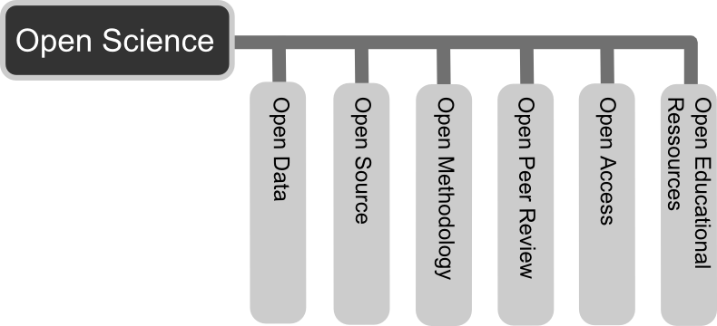
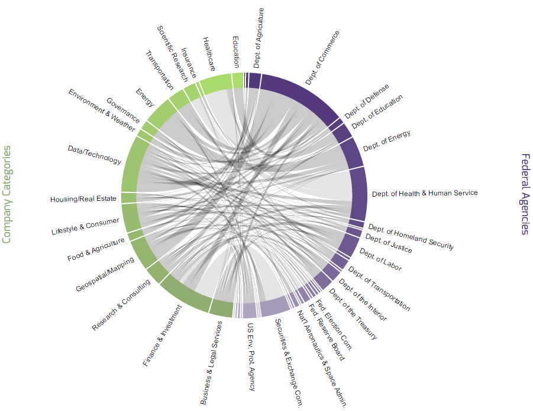
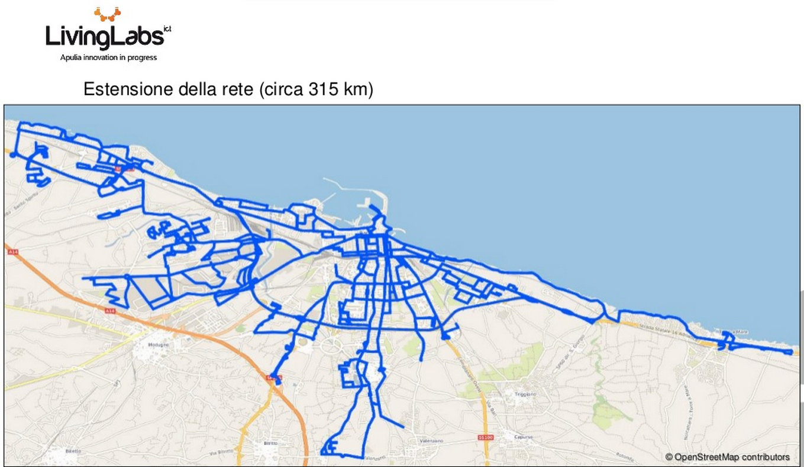
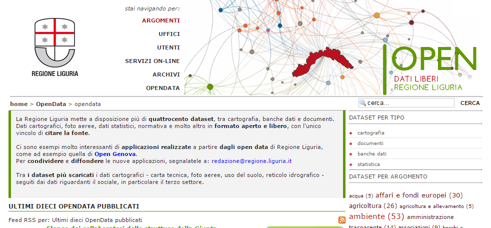
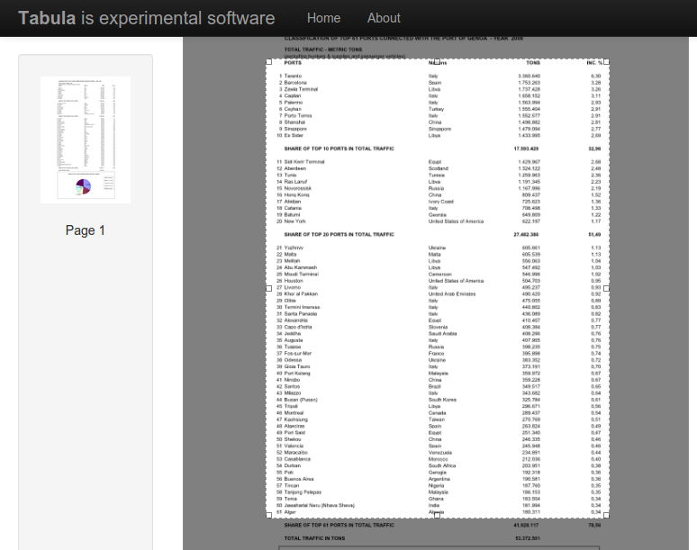
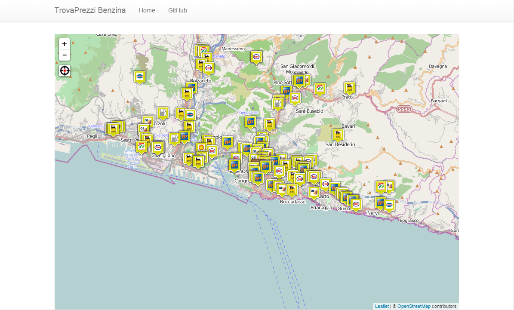
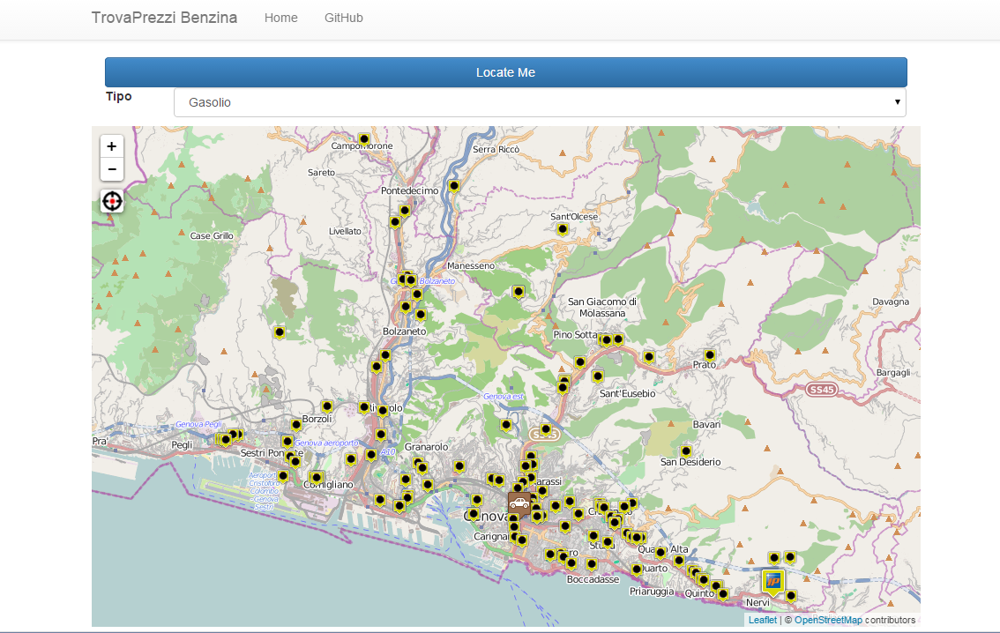
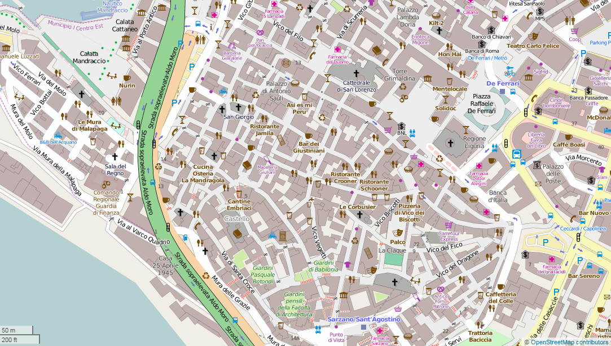
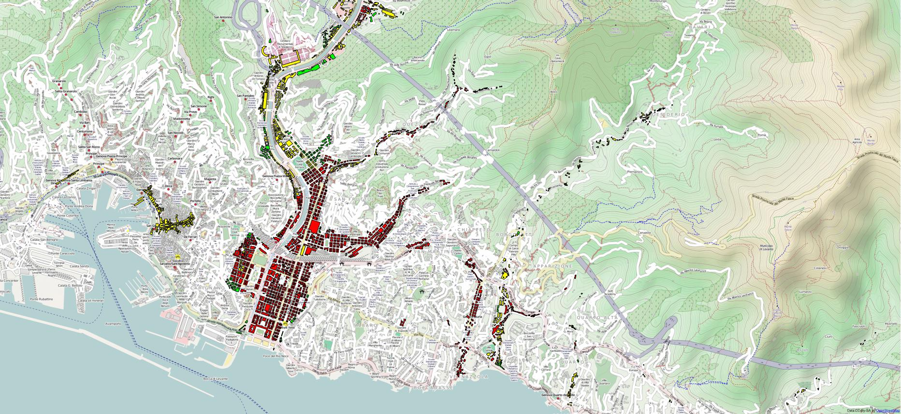

Open Data: informazioni accessibili a tutti
Una introduzione ai dati aperti
Cosa vuol dire aperto?
“Knowledge is open if anyone is free to access, use, modify, and share it — subject, at most, to measures that preserve provenance and openness.”
La conoscenza è aperta se ognuno è libero di
accedervi, usarla, modificarla, condividerla
con al massimo limitazioni che conservano
provenienza e apertura
(Open Definition 2.0)
Cronologia minima
- 1986: libertà del software (FSF)
- 1997: Debian Social Contract e Free Software Guidelines
- 1998: Open Source definition
- 2002: Creative Commons 1.0
- 2005: Open (Knowledge) Definition
- 2013: Creative Commons 4.0
Creative Commons
Diritti riservabili
- Attribuzione (BY)
- Condivisione allo stesso modo (SA)
- (Uso) non commerciale (NC)
- Nessuna opera derivata (ND)
Creative Commons
Combinazioni "aperte"
- CC-BY
- CC-BY-SA
Il resto non rispetta la definizione!
Creative Commons
CC0
- Non è una licenza (è una ‘dedica’ al pubblico dominio)
- Definizione unica per tutte le legislazioni
- Uniformità del concetto di "pubblico dominio"
Altre licenze libere
ODbL
- Nata per OpenStreetMap
- Focalizzata sulle basi di dati
- Conforme al diritto 'sui generis' europeo
- ODbL ~ CC-BY-SA 4.0
Perchè sono importanti?
- Per la scienza (Open Science)
- Per la trasparenza governativa (OGD)
- Per l'economia (business)
Open Science
La scienza si fa sui dati ed i risultati sperimentali devono esser di pubblico dominio
“Se ho visto più lontano, è perché stavo sulle spalle di giganti” (Newton, da Bernardo di Chartres)
Open Government Data
- Dati prodotti o commissionati dalla PA
- Pubblicare tutto al netto della privacy
- Trasparenza, democrazia ed efficacia governativa
- Ma anche: partecipazione civica ed innovazione
Business con i dati aperti
- Riuso commerciale crea occasioni per aziende e startup
- Che valore dare ai dati?
- Teoria del "network effect"
- Alcuni esempi: MapBox, ProPublica, OpenPlans, Uber
Valutazione dei dati: 5 star data
Una proposta di Tim Berners-Lee per i linked data
- Licenza libera
- Machine-readable, formato proprietario
- Machine-readable, formato aperto
- Risorse come link (RDF)
 Dati nel web semantico
Dati nel web semantico
Due parole sui formati
In che formato pubblico i dati?
- PDF: Malissimo!
- DOC(X)/XLS(X): Male!
- ODT/ODS: Bene!
- CSV/TSV: Ottimo!
- JSON/XML: Mitico!
- RDF: Grande!*
* Son gusti...
Open Data Engagement
Per le iniziative di rilascio, basandosi sullo schema di TBL.
- ☆ Rispondere alle richieste di dati
- ☆☆ Informazioni e manuali sui dati rilasciati
- ☆☆☆ Supportare conversazioni sui dataset
- ☆☆☆☆ Fornire tool, guide e organizzare sessioni sull'uso
- ☆☆☆☆☆ Cicli di feedback e connessioni con altri dati
Legislazione italiana
Il Decreto Crescita 2.0 riforma il Codice dell'Amministrazione digitale.
- Definisce cosa sono i formati aperti ed i dati aperti
- I documenti della PA sono Open by default, se non indicato
- Rapporto Annuale (AgID): non ancora uscito
- Agenda per la valorizzazione del patrimonio informativo pubblico (AgID)
- Linee Guida per la valorizzazione del patrimonio informativo pubblico (AgID)
Legislazione italiana
Agenda:
- Obiettivi da perseguire e principi
- Basi dati di interesse nazionale (G8 Open Data Charter)
Linee guida:
- Specifiche tecniche (metadati, ontologie, capitolati)
- Procedure di rilascio, valore e licenze
Open Data Charter
Quali sono i dati succosi?
- Registro imprese
- Statistiche su crimini e giustizia
- Sensori climatici e dati sul settore primario
- Scuole e performance, competenze digitali
- Livelli di inquinamento e consumo energetico
- Bilanci e spesa pubblica
- Dati geospaziali
- Dati sullo sviluppo globale
- Trasparenza governativa, legislazione e spese
- Dati sulla salute (prescrizioni, performance)
ESEMPI
Open Data a Matera
- Partiti da linee guida di Palermo
- Coinvolgimento di realtà locali (community Matera2019) e nazionali
- Pubblicazione di open data è workflow della PA
- Anche grazie a questo, Matera capitale europea della cultura
Open Data a Bari
- Progetto infomobilità (SEMINA)
- Rilascio dati AMTAB tramite API
- Progetti futuri: dati realtime
- Organizzazione hackathon (#mhoo14, 8 Novembre)
Open Data in Liguria
- Portale open data dati.liguria.it
- Molti geodati! (via trasformazione obbligatoria)
- Licenza CC-BY
- MA: non unico punto di download
- MA: formati non chiari
- MA: niente API (sensori vari)
Riuso: Scraping
- PDF: per estrarre informazione, Tabula
- Form di interrogazione: il pc 'finge' di essere un utente (curl)
Problemi:
- Soluzione 'estrema'
- Talvolta non legale
- Mostra l'energia potenziale di un dato, ma è un tappullo
Riuso: Scraping dell'Osservatorio Carburanti
- Osservatorio del Ministero: tutti i prezzi italiani
- Comunicazione obbligatoria per legge
- Ma non (ancora?) open data
- Scraping automatico e servizi su CarburantiMiSE
Riuso: Scraping dell'Osservatorio Carburanti
- Osservatorio del Ministero: tutti i prezzi italiani
- Comunicazione obbligatoria per legge
- Ma non (ancora?) open data
- Scraping automatico e servizi su CarburantiMiSE
Riuso: Import su OpenStreetMap
- Edificato da CTR su portale Open Data Liguria
- Conversione in formato OSM
- Upload manuale con gestione conflitti
- Restano da finire alcune zone di Genova
Riuso: Rischio alluvionale
- Data journalism senza pretese (articolo)
- Analisi GIS di due dataset open data
- Visualizzazione aree ed edifici a rischio
- Risultati: 4044 edifici a richio (83.11% residenziali)
GRAZIE!
Alcuni link
Altre slides
Attributions
- Slide 8: Open Science Prinzipien (Andreas E. Neuhold)
- Slide 18: Matera - Sasso Barisano (own work)
{kind=link}